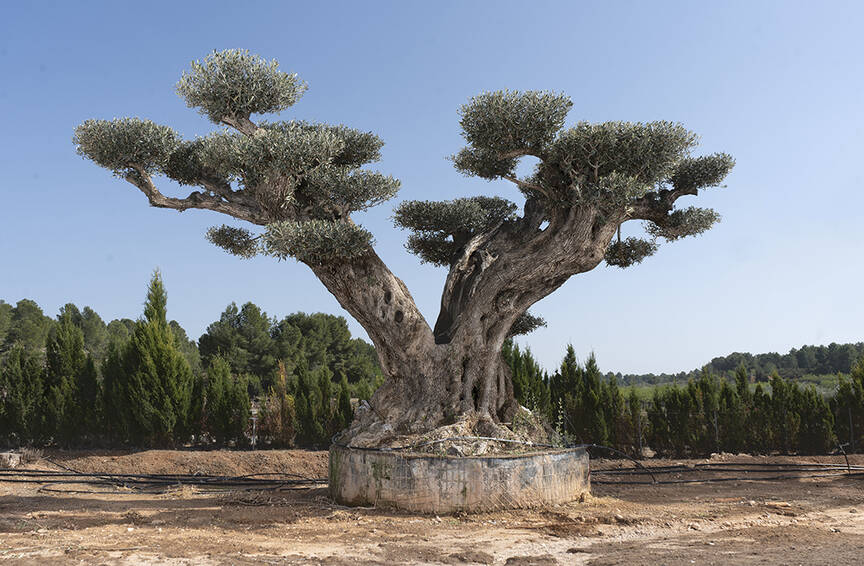
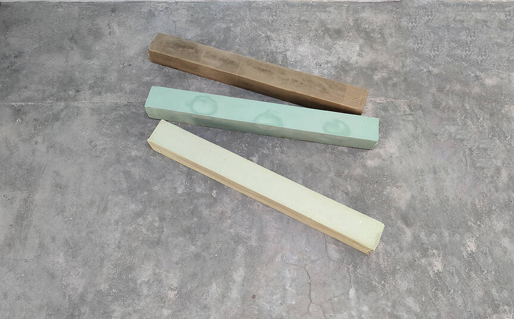
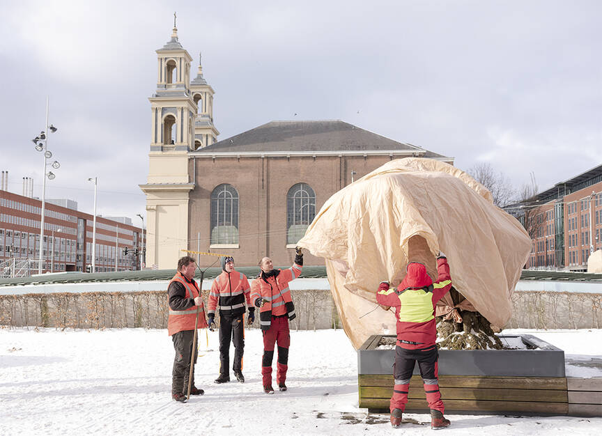
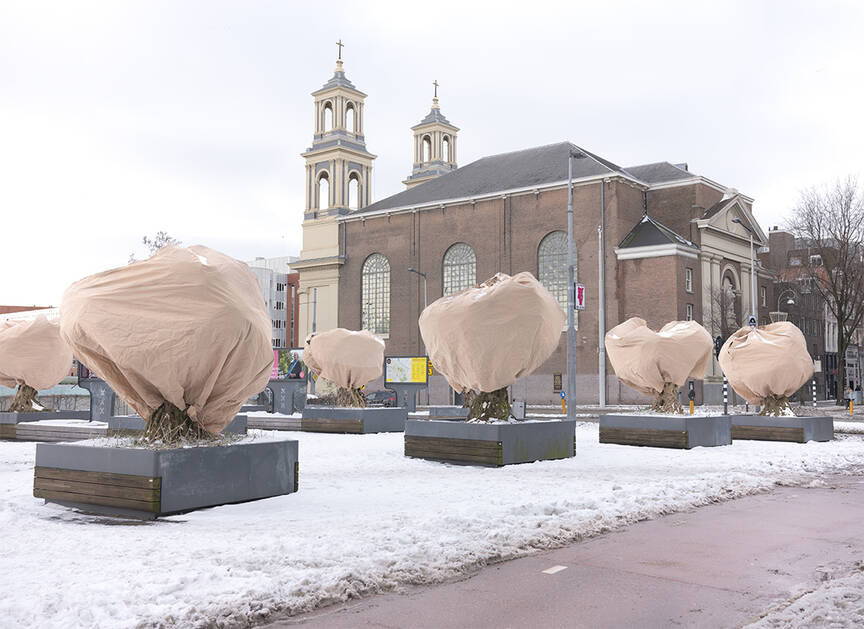
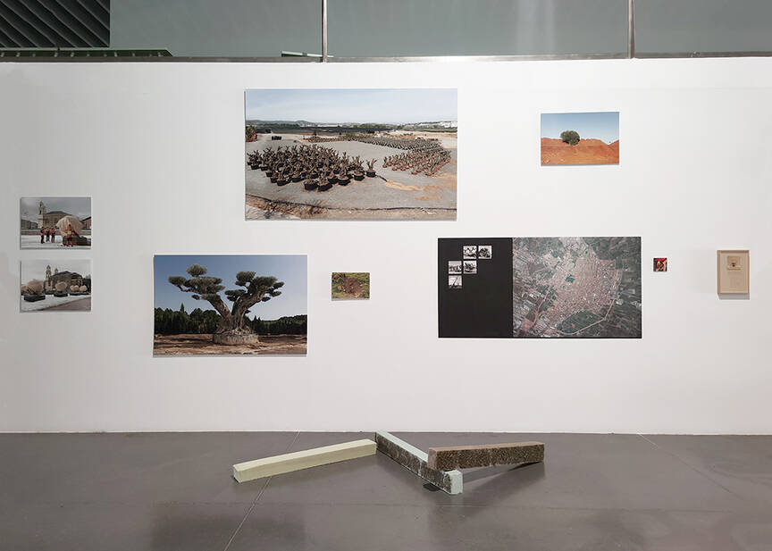

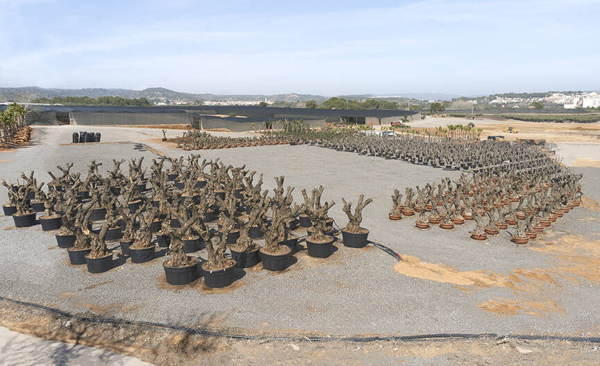
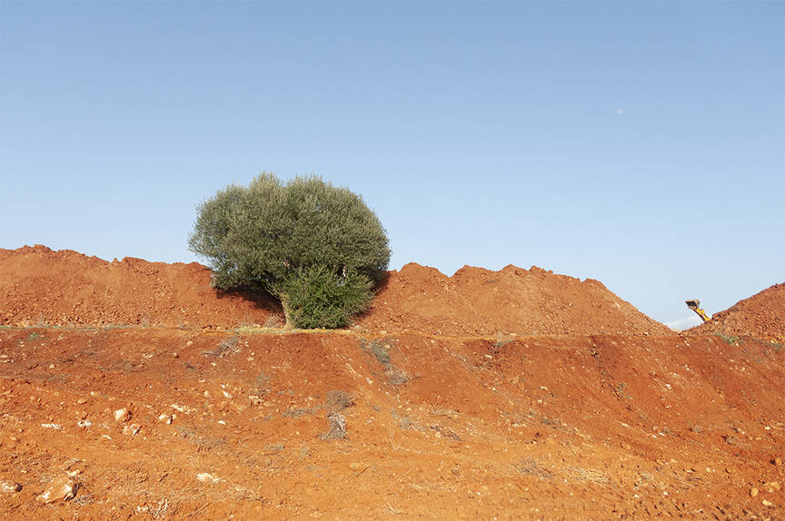
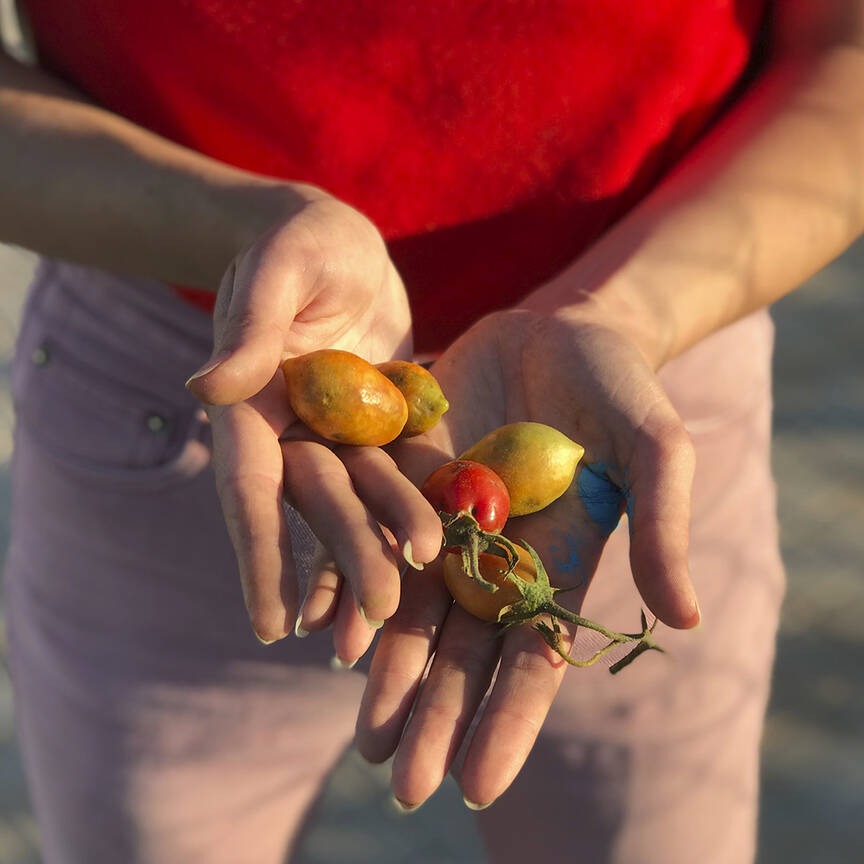
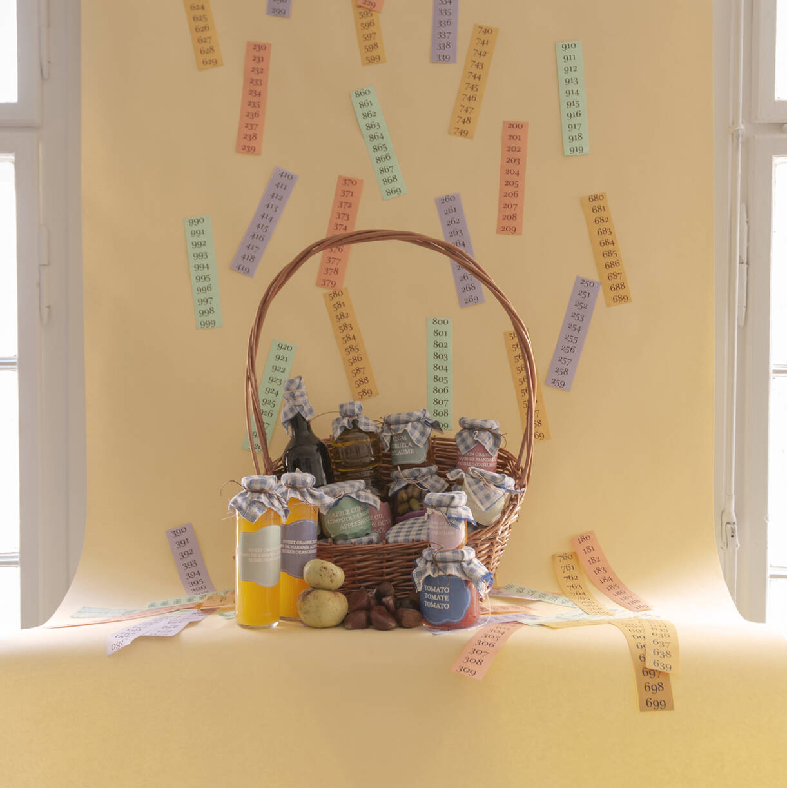
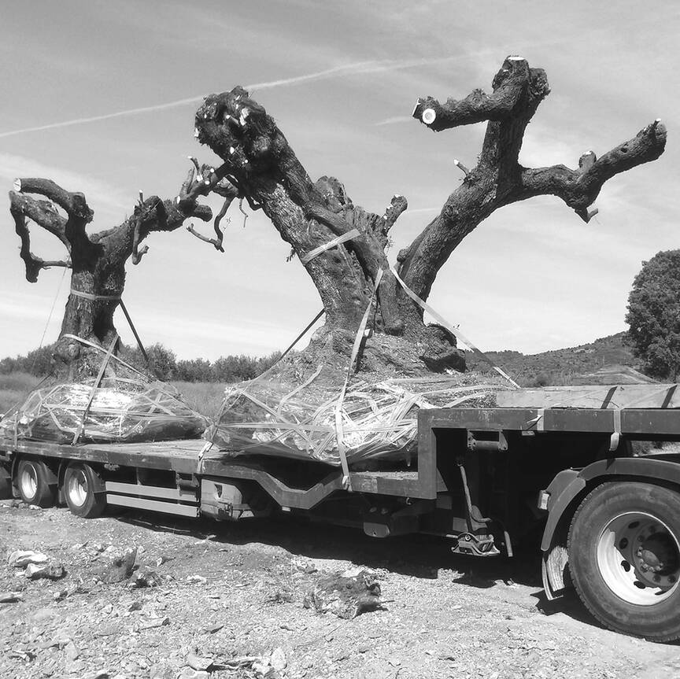
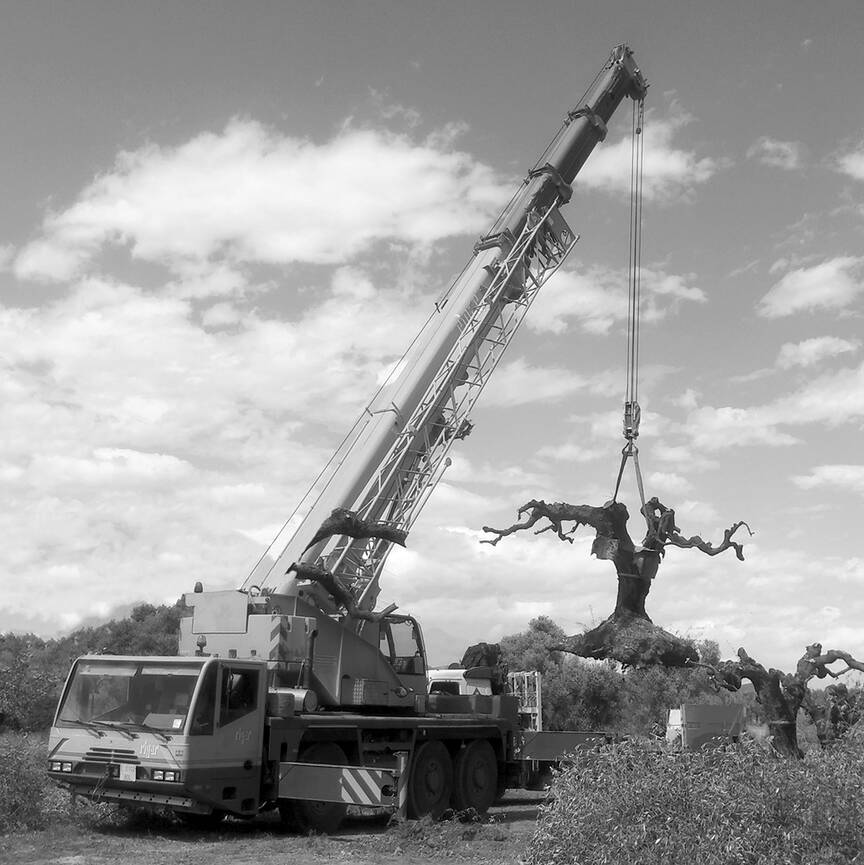
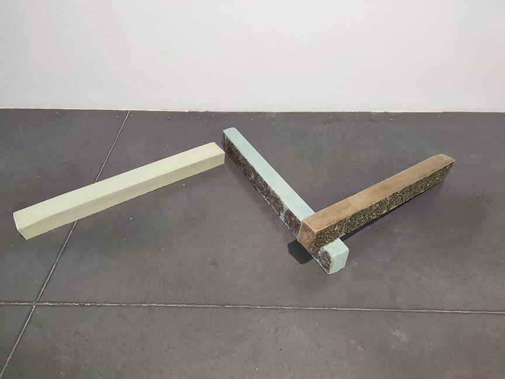
Help yourself is an English expression that is commonly used to invite someone to serve themselves a portion. A concept that I put into practice through a series of actions in which I claim the fruit tree as a producer as opposed to the decorative treatment it receives in «the city».
By loosing starry nights, we have also lost something very human: a feeling of interconnectedness that directly affects our psychology and behaviours. My frst experience of starry nights brings the feelings of nostalgia and childhood memories.
What happens if we bring the figure of the farmer to the cities?
This work aims to denounce the decorative treatment of one of the most representative native trees of the Mediterranean, the olive tree, by harvesting the olives from each of the olive trees transplanted in public areas of Castelló de la Plana, from where she has managed to extract and produce 40 litres of oil perfectly suitable for consumption, as confirmed by the positive results of the analysis carried out by the Analytical Chemistry Department of the Universitat Jaume I. This oil was subsequently used to make the piece Soap from olive oil extracted from the City (2021) with the intention of making visible the amount of natural resources that are wasted in the city. This is an installation that invites us to rethink and value other ways of inhabiting the city in which the dissociative nexus of the rural and the urban can coexist.